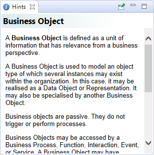

La fenêtre des astuces affiche des explications concernant l'élément sélectionné ou sur l'entrée de la palette choisie. Ceci peut être utile pour obtenir des informations de base sur ce à quoi servent les éléments et les relations dans un modèle.
L'indication sélectionnée peut être épinglée en utilisant le bouton épingle dans la fenêtre des astuces.
La fenêtre des astuces